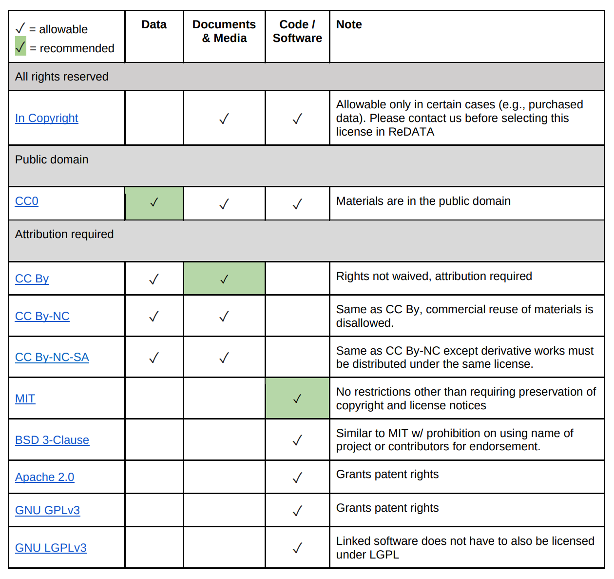
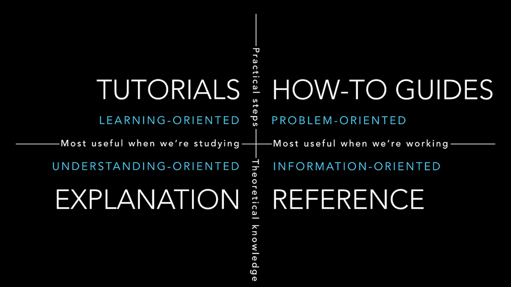

Managing Data¶
Relating to Open Science
As you may recall, Open Science is an ideology built around the goal of making the science you work on clear and accessible to everyone.
Data management and documentation fit well within this framework, as they emphasize that the first person who needs to understand the science is the one doing it — you.
Learning Objectives
After this lesson, you should be able to:
- Recognize data as the foundation of open science and be able to describe the "life cycle of data"
- Use self-assessments to evaluate your current data management practices
- Cite tools and resources to improve your data management practices
- Know the biggest challenge to effective data management
How would you answer?
- If you give your data to a colleague who has not been involved with your project, would they be able to make sense of it? Would they be able to use it properly?
- If you come back to your own data in five years, will you be able to make sense of it? Will you be able to use it properly?
- When you are ready to publish a paper, is it easy to find all the correct versions of all the data you used and present them in a comprehensible manner?
Why should you care about data management?¶
The biggest challenge to data management is making it an afterthought.
Poor data management doesn't have an upfront cost. You can do substantial work before realizing you are in trouble.
The solution? Make data management the first thing you consider when starting a research project.
Well-managed Data Sets:
- Can make life much easier for you and your collaborators
- Benefit the scientific research community by allowing others to reuse your data
- Are becoming required by most funders and many journals, which are requesting a submission of a Data Management Plan (DMP) with the initial submission of your proposal.
The NSF is stepping in, getting stricter about data
- Recent Dear Colleague letter from NSF's points out that:
- Open science promotes broader access to research data, enhancing public benefits and replicability.
- NSF requires (DMPs) in proposals, encouraging use of persistent IDs and machine-readable DMPs.
- NSF proposal preparation guidelines now require at least the following:
- Proposals must include a 2-page DMP outlining data types, formats, sharing, and archiving.
- The DMP must address privacy, intellectual property, and reuse policies, and collaborative projects should submit one unified DMP.
- A DMP stating no detailed plan is needed is allowed with justification, and the DMP will be reviewed as part of the proposal's merit.
What Classifies as Data?¶
Different types of data require different management practices. Here are some examples of what we can call Data (Adapted from DMPTool Data management general guidance).
Data Types:
- Text: field or laboratory notes, survey responses
- Numeric: tables, counts, measurements
- Audiovisual: images, sound recordings, video
- Models, computer code
- Discipline-specific: FASTA in biology, FITS in astronomy, CIF in chemistry
- Instrument-specific: equipment outputs
Data Sources:
Observational
- Captured in real-time, typically outside the lab
- Usually irreplaceable and therefore the most important to safeguard
- Examples: Sensor readings, telemetry, survey results, images
Experimental
- Typically generated in the lab or under controlled conditions
- Often reproducible, but can be expensive or time-consuming
- Examples: gene sequences, chromatograms, magnetic field readings
Simulation
- Machine generated from test models
- Likely to be reproducible if the model and inputs are preserved
- Examples: climate models, economic models
Derived / Compiled
- Generated from existing datasets
- Reproducible, but can be very expensive and time-consuming
- Examples: text and data mining, compiled database, 3D models
The Data Life Cycle¶
Data management is the set of practices that allow researchers to effectively and efficiently handle data throughout the data life cycle. Although typically shown as a circle (below) the actually life cycle of any data item may follow a different path, with branches and internal loops. Being aware of your data's future helps you plan how to best manage them.

Breaking down the Data Life Cycle Graph
Plan
- Describe the data that will be compiled, and how the data will be managed and made accessible throughout its lifetime
- A good plan considers each of the stages below
Collect
- Have a plan for data organization in place before collecting data
- Collect and store observation metadata at the same time you collect the metadata
- Take advantage of machine generated metadata
Assure
- Record any conditions during collection that might affect the quality of the data
- Distinguish estimated values from measured values
- Double check any data entered by hand
- Perform statistical and graphical summaries (e.g., max/min, average, range) to check for questionable or impossible values.
- Mark data quality, outliers, missing values, etc.
Describe
- Comprehensive data documentation (i.e. metadata) is the key to future understanding of data. Without a thorough description of the context of the data, the context in which they were collected, the measurements that were made, and the quality of the data, it is unlikely that the data can be easily discovered, understood, or effectively used.
- Thoroughly describe the dataset (e.g., name of dataset, list of files, date(s) created or modified, related datasets) including the people and organizations involved in data collection (e.g., authors, affiliations, sponsor). Also include:
- An ORCID (obtain one if you don't have one).
- The scientific context (reason for collecting the data, how they were collected, equipment and software used to generate the data, conditions during data collection, spatial and temporal resolution)
- The data themselves
- How each measurement was produced
- Units
- Format
- Quality assurance activities
- Precision, accuracy, and uncertainty
Some metadata standards you may want to consider:
- DataCite for publishing data
- Dublin Core for sharing data on the web
- MIxS Minimum Information for any (x) sequence
- OGC standards for geospatial data
Ontologies provide standardization for metadata values
Example of ontologies:
- Environment Ontology terms for the MIxS standards
- Plant Ontology for plant tissue types or development stages
- FAIRSharing.org lists standards and ontologies for life sciences.
Preserve
In general, data must be preserved in an appropriate long-term archive (i.e. data center). Here are some examples:
- Sequence data should go to a national repository, frequently NCBI
- Identify data with value - it may not be necessary to preserve all data from a project
- The CyVerse Data Commons provides a place to publish and preserve data that was generated on or can be used in CyVerse, where no other repository exists.
- See lists of repositories at FAIRSharing.org
- See lists of repositories at Data Dryad
- Github repos can get DOIs through Zenodo
- Be aware of licensing and other intellectual property issues
- Repositories will require some kind of license, often the least restrictive (see for example Creative Commons)
- Repositories are unlikely to enforce reuse restrictions, even if you apply them.
Discover
- Good metadata allows you to discover your own data!
- Databases, repositories, and search indices provide ways to discover relevant data for reuse
Integrate
- Data integration is a lot of work
- Standards and ontologies are key to future data integration
- Know the data before you integrate them
- Don't trust that two columns with the same header are the same data
- Properly cite the data you reuse!
- Use DOIs (Digital Object Identifiers) wherever possible
Analyze
- Follow open science principles for reproducible analyses (CyVerse, RStudio, notebooks, IDEs)
- State your hypotheses and analysis workflow before collecting data. Tools like Open Science Framework (OSF) allow you to make this public.
- Record all software, parameters, inputs, etc.
References and Resources
Data Principles¶


Learning Objectives
- Recall the meaning of FAIR
- Understand why FAIR is a collection of principles (rather than rules)
- Understand CARE
FAIR Principles¶
In 2016, the FAIR Guiding Principles for scientific data management and stewardship were published in Scientific Data.
Read it.
Why Principles?
FAIR is a collection of principles. Ultimately, different communities within different scientific disciplines must work to interpret and implement these principles. Because technologies change quickly, focusing on the desired end result allows FAIR to be applied to a variety of situations now and in the foreseeable future.
Findable
- F1. (meta)data are assigned a globally unique and persistent identifier
- F2. data are described with rich metadata (defined by R1 below)
- F3. metadata clearly and explicitly include the identifier of the data it describes
- F4. (meta)data are registered or indexed in a searchable resource
Accessible
- A1. (meta)data are retrievable by their identifier using a standardized communications protocol
- A1.1 the protocol is open, free, and universally implementable
- A1.2 the protocol allows for an authentication and authorization procedure, where necessary
- A2. metadata are accessible, even when the data are no longer available
Interoperable
- I1. (meta)data use a formal, accessible, shared, and broadly applicable language for knowledge representation.
- I2. (meta)data use vocabularies that follow FAIR principles
- I3. (meta)data include qualified references to other (meta)data
Reusable
- R1. meta(data) are richly described with a plurality of accurate and relevant attributes
- R1.1. (meta)data are released with a clear and accessible data usage license
- R1.2. (meta)data are associated with detailed provenance
- R1.3. (meta)data meet domain-relevant community standard
Open vs. Public vs. FAIR
Open: “Open data and content can be freely used, modified, and shared by anyone for any purpose”.
FAIR does NOT demand that data be open: See one definition of open: http://opendefinition.org/.
CARE Principles¶
Nihil de nobis, sine nobis.
Who owns the açaí?
The CARE Principles for Indigenous Data Governance were drafted at the International Data Week and Research Data Alliance Plenary co-hosted event "Indigenous Data Sovereignty Principles for the Governance of Indigenous Data Workshop," 8 November 2018, Gaborone, Botswana.
Collective Benefit
- C1. For inclusive development and innovation
- C2. For improved governance and citizen engagement
- C3. For equitable outcomes
Authority to Control
- A1. Recognizing rights and interests
- A2. Data for governance
- A3. Governance of data
Responsibility
- R1. For positive relationships
- R2. For expanding capability and capacity
- R3. For Indigenous languages and worldviews
Ethics
- E1. For minimizing harm and maximizing benefit
- E2. For justice
- E3. For future use
Connecting FOSS and CARE: Lydia Jennings
Dr. Lydia Jennings was a Data Science Fellow at the University of Arizona, who attended FOSS in Fall of 2022.
Lydia graduated from the University of Arizona's Department of Evironemtal Sciences, and has published a paper on the application of the CARE principles to ecology and biodiversity research.
Go Lydia!
Appying the 'CARE Principles for Indigenous Data Governance' to ecology and biodiversity, Nature Ecology & Evolution, 2023.
How to get to FAIR?¶
This is a question that only you can answer, that is because it depends on (among other things)
- Your scientific discipline: Your datatypes and existing standards for what constitutes acceptable data management will vary.
- The extent to which your scientific community has implemented FAIR: Some disciplines have significant guidelines on FAIR, while others have not addressed the subject in any concerted way.
- Your level of technical skills: Some approaches to implementing FAIR may require technical skills you may not yet feel comfortable with.
While a lot is up to you, the first step is to evaluate how FAIR you think your data are:
Assessing the FAIRness of you data
Thinking about a dataset you work with, complete the ARDC FAIR assessment in your own time.
Resources
- The FAIR Guiding Principles for scientific data management and stewardship
- Wilkinson et al. (2016) established the guidelines to improve the Findability, Accessibility, Interoperability, and Reuse (FAIR) of digital assets for research.
- Go-FAIR website
- Carroll et al. (2020) established the CARE Principles for Indigenous Data Governance. full document
- Indigenous Data Sovereignty Networks
Data Self-assessment¶
Activity
In small groups, discuss the following questions.
- What are the two or three data types that you most frequently work with? - Think about the sources (observational, experimental, simulated, compiled/derived) - Also consider the formats (tabular, sequence, database, image, etc.)
-
What is the scale of your data?
Tip: think of the Three V's
- Volume: Size of the data (MBs, GBs, TBs); can also include how many files (e.g dozens of big files, or millions of small ones)
- Velocity: How quickly are these data produced and analyzed? A lot coming in a single batch infrequently, or, a constant small amount of data that must be rapidly analyzed?
- Variety: How many different data types (raw files? databases?) A fourth V (Veracity) captures the need to make decisions about data processing (i.e., separating low- and high-quality data)
-
What is your strategy for storing and backing up your data?
- What is your strategy for verifying the integrity of your data? (i.e. verifying that your data has not be altered)
- What is your strategy for searching your data?
- What is your strategy for sharing (and getting credit for) your data? (i.e. How will do you share with your community/clients? How is that sharing documented? How do you evaluate the impact of data shared? )
Data Management Plans¶
"Those who fail to plan, plan to fail."
Learning Objectives
- Describe the purpose of a data management plan
- Describe the important elements of a data management plan
What is a DMP?
"A data management plan or DMP is a formal document that outlines how data are to be handled both during a research project, and after the project is completed. The goal of a data management plan is to consider the many aspects of data management, metadata generation, data preservation, and analysis before the project begins; this may lead to data being well-managed in the present, and prepared for preservation in the future."
Source: Wikipedia.
Here are some Example DMPs made public from the DMPtool website. You can use these as example for creating your own DMP.
Why bother with a DMP?
How would you answer?
Do you have a data management plan? If so, how do you use it?
Returning to the assertion that data (and its value) is at the foundation of your science, working without a data management plan should be considered scientific misconduct.
Those are strong words. And while we might have an intuition of the boundaries of research ethics - data mismanagement seems more like an annoyance than misconduct. However, if your mismanagement leads to error in your research data, or the inability to make publicly-funded research open to the public, these are serious consequences. Increasingly, funders realize this.

Stick:
- You have to make one.
- Reviewers definitely look at them, but they may not be enforced.
Carrot:
- Make your life easier.
- Planning for you project makes it run more smoothly.
- Avoid surprise costs.
DMPTools: making your (data) life a little easier
Here are a couple of tools you can utilize in order to create a Data Management Plan:
Licenses¶
By default, when you make creative work, that work is under exclusive copyright. This means that you have the right to decide how your work is used, and that others must ask your permission to use your work.
If you want your work to be Open and used by others, you need to specify how others can use your work. This is done by licensing your work.
License Examples
- MIT License
- GNU General Public License v3.0
- FOSS material has been licensed using the Creative Commons Attribution 4.0 International License
License Options from UArizona Library¶

Additional Info
- General guidance on how to choose a license https://choosealicense.com/
- More good guidance on how to choose a license https://opensource.guide/legal/
- Licensing options for your Github Repository
References and Resources
- NSF Guidelines on DMPs
- https://dmptool.org/general_guidance
- https://dmptool.org/public_templates
- Professional and scholarly societies, e.g., theEcological Society of America http://www.esa.org/esa/science/data-sharing/resources-and-tools/
- DataOne - https://dataoneorg.github.io/Education/bestpractices/
- Data Carpentry - http://datacarpentry.org/
- The US Geological Survey https://www.usgs.gov/data-management
- Repository registry (and search) service: http://www.re3data.org/
- Your university library
Project Documentation¶
A great Open Scientist is someone who documents their work and shares it with the world. This means going well beyond peer-reviewed publications.
Here are some discussing points on why you should carry out documentation:
- Describe how to use or build your computer code or tools
- Share best practices for a method or protocol
- Create and share educational material so others in your field can learn from you
- Share a first-person account of your journey through a project

Explanining the quadrants
- Tutorials: Lessons! Tutorials are lessons that take the reader by the hand to understand how the basics of a tool work. They are what your project needs in order to show a beginner that they can achieve something with it. The techical teaching we do in FOSS are mostly tutorials. For example, we do simple tutorials to teach the mechanics of version control.
- How-to-guides: Recipes! How-to-guides take the reader through the steps required to acheive a specific outcome or answer a specific question. An example how-to-guide could be a guide on how to install a specific software on a specific operating system.
- References: References offer technical descriptions of the machinery and how to operate it. References have one job only: to describe. They are code-determined, because ultimately that’s what they describe: key classes, functions, APIs, and so they should list things like functions, fields, attributes and methods, and set out how to use them.
- Explanation: Discussions! The aims of explanations are to clarify and illuminate a particular topic by broadening the documentation’s coverage of a topic.
Tips for Great Documentation¶
- Clarity: Documentation should be easy to understand with clear language and no ambiguity.
- Completeness: It must cover all essential details, leaving nothing crucial undocumented.
- Accuracy: Information should be up-to-date and correct to prevent errors and misunderstandings.
- Organization: A logical structure and clear organization make it easy to navigate and find information.
- Relevance: Documentation should focus on what's pertinent to its intended audience or purpose, avoiding unnecessary information.
Public Repositories for Documentation¶
GitHub Readme
- On Github, good documentation starts with a robust ReadMe file. The ReadMe file is the first thing that people see when they visit your repository. It is a good place to explain what your project does, how to use it, and how to contribute to it. Here is an example.
GitHub Wiki
- Also on Github, you can use the Wiki feature to create a separate space for documentation. The Wiki is a place to document your project in a way that is separate from the code. Here is an example
GitHub Pages
- Github Pages are hosted directly from your GitHub repository
- GitHub pages are free, fast, and easy to build, but limited in use of subdomain or URLs
- You can pull templates from other GitHub users for your website, e.g. Jekyll themes
- The FOSS website is rendered using GitHub Pages using MkDocs and the Material theme for MkDocs.
- Other popular website generator for GitHub Pages is Bootstrap.js.
Material MkDocs
- Material Design theme for MkDocs, a static site generator geared towards (technical) project documentation.
- Publish via GitHub Actions
- Uses open source Material or ReadTheDocs Themes
ReadTheDocs
- publishing websites via ReadTheDocs.com costs money.
- You can work in an offline state, where you develop the materials and publish them to your localhost using Sphinx
- You can work on a website template in a GitHub repository, and pushes are updated in near real time using ReadTheDocs.com.
- Here is example documentation of Pytorch using ReadTheDocs: PyTorch.
Bookdown
- Bookdown is an open-source R package that facilitates writing books and long-form articles/reports with R Markdown.
- Bookdown websites can be hosted by RStudio Connect
- You can publish a Bookdown website using Github Pages
Quarto
- Quarto is an open-source scientific and technical publishing system built on Pandoc
- Build a website using Quarto's template builder
- Build with Github Pages
JupyterBook
- Based on Project Jupyter
ipynband MarkDown - Uses
condapackage management
GitBook
- GitBook websites use MarkDown syntax
- Free for open source projects, paid plans are available
Confluence Wikis
- Confluence Wikis are another tool for documenting your work. You can see an example from Cyverse.
Things to remember about Documentation
-
Documentation should be written in such a way that people who did not write the documentation can read and then use or read and then teach others in the applications of the material.
-
Documentation is best treated as a living document, but version control is necessary to maintain it
-
Technology changes over time, expect to refresh documentation every 3-5 years as your projects age and progress.
Self Assessment¶
What is a Data Management Plan?
Important: A data management plan (DMP) is now required aspect of publicly funded research.
DMPs are short, formal, documents outlining what types of data will be used, and what will be done with the data both during and after a research project concludes.
True or False: When science project funding ends, the data should end with it
False
Data live on after a project ends.
Ensuring that data have a full lifecycle where they can be (re)hosted and made available after a project ends is critical to open science and reproducible research
... or maybe?
Sometimes destroying data is part of the life cycle of data - this may be required if data are sensitive and could be used unethically in the future, beyond the control of the original investigator team.
True or False: FAIR and CARE data principles are the same
False
The CARE principles were created in order to help guide and answer when and how applying FAIR data principles to soverign indigenous-controlled data should be done and when it should not.
(½) Your project has been greenlit and you require to create a GitHub repository for your work; What you are working on is likely going to be used by others in your field, thus you want to use a licence that allow for others to access your work and make changes where needed. Which licence do you choose?
MIT License
A short and simple permissive license with conditions only requiring preservation of copyright and license notices. Licensed works, modifications, and larger works may be distributed under different terms and without source code.
(2/2) You approach your PI with the idea, and they're not happy with the choice. They are pushing to keep the attribution to your lab; Which license type would be useful in this situation?
CC By
Rights are not waived, attribution is required.